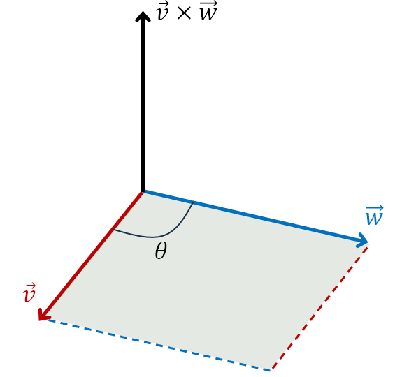
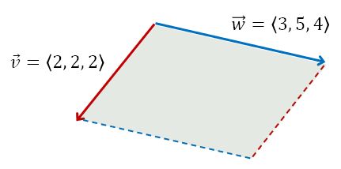

Lesson 3: The Cross Product
Given the two vectors below, their cross product \(\vec{v} \times \vec{w}\) is defined as below.
Cross Product
Idea: A common way to remember this is as the determinant of the matrix below.
An Example
Given the vectors \(\vec{v} = \langle 2, 2, 2 \rangle\) and \(\vec{w} = \langle 3, 5, 4 \rangle\), find \(\vec{v} \times \vec{w}\).
Note: The cross product yields a vector! It is sometimes called the vector product.
For the standard basis vectors, the following are true.
| \(\mathbf{i} \times \mathbf{i} = \mathbf{0}\) | \(\mathbf{i} \times \mathbf{j} = \mathbf{k}\) | \(\mathbf{j} \times \mathbf{i} = -\mathbf{k}\) |
| \(\mathbf{j} \times \mathbf{j} = \mathbf{0}\) | \(\mathbf{j} \times \mathbf{k} = \mathbf{i}\) | \(\mathbf{i} \times \mathbf{k} = -\mathbf{j}\) |
| \(\mathbf{k} \times \mathbf{k} = \mathbf{0}\) | \(\mathbf{k} \times \mathbf{i} = \mathbf{j}\) | \(\mathbf{k} \times \mathbf{j} = -\mathbf{i}\) |
A good homework problem is to verify these properties. Let’s confirm \(\mathbf{i} \times \mathbf{k} = -\mathbf{j}\).
Use the cross product formula with \(\vec{v} = \mathbf{i}\) and \(\vec{w} = \mathbf{k}\).
For vectors \(\vec{u}\), \(\vec{v}\), and \(\vec{w}\), and a scalar \(a\), the following are true.
For nonzero vectors \(\vec{v}\) and \(\vec{w}\), the following are true.
- If \(\theta\) is the angle between the vectors, then \(\|\vec{v} \times \vec{w}\| = \|\vec{v}\|\,\|\vec{w}\|\sin\theta\).
- \(\vec{v} \times \vec{w}\) is perpendicular to both \(\vec{v}\) and \(\vec{w}\).
- \(\vec{v} \times \vec{w} = \vec{0}\) if and only if \(\vec{v}\) and \(\vec{w}\) are parallel.
- The parallelogram with adjacent sides \(\vec{v}\) and \(\vec{w}\) has area \(\|\vec{v} \times \vec{w}\|\).

An Example
Find the area of the parallelogram having adjacent sides \(\vec{v} = \langle 2, 2, 2 \rangle\) and \(\vec{w} = \langle 3, 5, 4 \rangle\), shown in the figure.
Idea: From one of the properties of the cross product, this area is equal to the magnitude of the cross product.
The area is \(2\sqrt{6}\).
